set.seed(42)
source("../INPUT/FUNCTIONS/preprocess.R")
library(dplyr)
library(rsample)
library(recipes)
library(randomForest)
library(corrplot)
library(tibble)
library(purrr)
library(reshape2)
library(ggplot2)
library(plotly)
library(scatterplot3d)
library(factoextra)
library(cluster)
library(tidyverse)MAU
Import packages
%MAU - Used
data <- read.csv('../Input/DATA/Summary_Dataset_Used_Percentage_MAU.csv')
data_multi <- read.csv('../Input/DATA/Summary_Dataset_Multivar_Percentage_MAU.csv')data = preprocess(data)
data_multi = preprocess(data_multi)
glimpse(data)Rows: 16
Columns: 26
$ Type <chr> "Primary hominin interment", "Pr…
$ AccumulationType <chr> "Burial", "Burial", "Burial", "C…
$ Individuals <int> 49, 84, 6, 7, 6, 2, 5, 43, 13, 1…
$ Cranium <dbl> 0.8837209, 1.0000000, 1.0000000,…
$ Mandible <dbl> 0.7906977, 0.9411765, 1.0000000,…
$ Cervical <dbl> 0.84385382, 0.60504202, 0.200000…
$ Thoracic <dbl> 0.87596899, 0.65441176, 0.400000…
$ Lumbar <dbl> 0.89767442, 0.74117647, 0.480000…
$ Sacrum <dbl> 0.9069767, 0.7647059, 0.6000000,…
$ Sternum <dbl> 0.0000000, 0.0000000, 0.4000000,…
$ Clavicle <dbl> 0.9418605, 0.7573529, 0.6000000,…
$ Rib <dbl> 0.87306202, 0.60845588, 0.275000…
$ Scapula <dbl> 0.9069767, 0.7720588, 0.4000000,…
$ Humerus <dbl> 0.8488372, 0.9485294, 0.9000000,…
$ Radius <dbl> 0.89534884, 0.88970588, 0.800000…
$ Ulna <dbl> 0.8604651, 0.8014706, 0.9000000,…
$ Carpal <dbl> 0.75581395, 0.35661765, 0.275000…
$ Innominate <dbl> 0.8953488, 0.8823529, 0.7000000,…
$ Femur <dbl> 1.0000000, 0.9779412, 0.8000000,…
$ Patella <dbl> 0.7906977, 0.5661765, 0.2000000,…
$ Tibia <dbl> 0.7674419, 0.8897059, 0.9000000,…
$ Fibula <dbl> 0.7906977, 0.7647059, 0.7000000,…
$ Tarsal <dbl> 0.72093023, 0.60084034, 0.314285…
$ Hand..metacarpals...manual.phalanges. <dbl> 0.750917993, 0.461687307, 0.1842…
$ Foot..metatarsals...pedal.phalanges. <dbl> 0.497552020, 0.337074303, 0.1526…
$ Cluster_Pnas <chr> "A", "A", "B", "C", "C", "C", "C…rownames(data) [1] "Pottery_Mound_Pueblo_IV" "Kuaua_Pueblo_Pueblo_IV"
[3] "Skhul_Layer_B" "Fontbregoua_H1"
[5] "Fontbregoua_H3" "Gran_Dolina_TD6"
[7] "El_Mirador_MIR4A" "Krapina"
[9] "AL_333" "Unscavenged_human_corpses_WA"
[11] "Scavenged_human_corpses_WA" "Mapungubwe_leopard_kills"
[13] "Leopard_refuse" "Misgrot_Cave"
[15] "Sima_de_los_Huesos" "Dinaledi" # Define the columns for which you want to count the labels
columns_to_count <- c("Type", "AccumulationType", "Individuals", "Cluster_Pnas")
# Function to count labels in each specified column
count_labels <- function(data, columns) {
sapply(data[columns], function(column) table(column))
}
# Use the function to count labels
label_counts <- count_labels(data, columns_to_count)
# Print the counts
label_counts$Type
column
Hominin cannibalism/ secondary interment
5
Leopard refuse
2
Natural Baboon accumulation
1
Nonanthropogenic hominin accumulation
1
Possible hominin deliberate disposal
2
Possible Primary hominin interment
1
Primary hominin interment
2
Scavenged human corpses
1
Unscavenged human corpses
1
$AccumulationType
column
Burial Cannibalism/Mass Grave
5 5
Carnivore intervention Non-human/ non-carnivore intervention
3 3
$Individuals
column
2 5 6 7 8 13 17 18 43 45 49 84
1 1 2 3 1 2 1 1 1 1 1 1
$Cluster_Pnas
column
A B C D
3 3 6 4 Take SH out of the training set (to avoid data leakage)
split <- split_train_SH(data)
data <- split$train_data
sh <- split$sh_dataCenter and scale numeric data
Normalize numeric data to have a standard deviation of one and a mean of zero.
# Store original row names of the datasets
data_row_names <- rownames(data)
sh_row_names <- rownames(sh)
# Step 1: Create a recipe
recipe <- recipe(~ ., data = data) %>%
step_normalize(all_predictors(), -all_of(c("Type", "AccumulationType", "Individuals", "Cluster_Pnas")))
# Step 2: Fit the recipe to the training set
fitted_recipe <- prep(recipe, training = data)
# Step 3: Apply the transformation to both training and test sets
data_transformed <- bake(fitted_recipe, new_data = data)
sh_transformed <- bake(fitted_recipe, new_data = sh)
# Reattach the row names
rownames(data_transformed) <- data_row_names
rownames(sh_transformed) <- sh_row_namesFeature selection
In Pnas RF with labels has been used (!data leakage).
# Ensure reproducibility
set.seed(42)
# Prepare the label and features
label <- data$Type
data_rf_sup <- data %>% select(-c("Type", "AccumulationType", "Individuals", "Cluster_Pnas"))
# Convert 'Type' to a factor
label <- as.factor(data$Type)
# Train the RandomForest model
rf_model_sup <- randomForest(x = data_rf_sup, y = label, importance = TRUE)
# Get the feature importance
feature_importance_ <- importance(rf_model_sup)
# Print the feature importance
feature_importance_[,c(10:11)][] MeanDecreaseAccuracy MeanDecreaseGini
Cranium -2.3769161 0.1845349
Mandible -2.1535802 0.1769333
Cervical 2.1977215 0.4618160
Thoracic 3.1978750 0.6586482
Lumbar 1.4225745 0.4292737
Sacrum 1.7512565 0.3866271
Sternum 0.2009160 0.2646781
Clavicle 3.7975821 0.7116743
Rib 2.6494694 0.6603348
Scapula 1.0682946 0.4157662
Humerus 3.3804314 0.5921659
Radius 0.2694898 0.4278141
Ulna 2.2156080 0.5295205
Carpal 5.7419342 0.6340798
Innominate 3.4253725 0.5691511
Femur 5.5660185 0.6924206
Patella -1.1829846 0.3333756
Tibia 3.0599968 0.4876387
Fibula 2.9564082 0.4883134
Tarsal 8.5268371 0.9853271
Hand..metacarpals...manual.phalanges. 7.7884663 0.8539371
Foot..metatarsals...pedal.phalanges. 5.1568700 0.6970359# Selecting MeanDecreaseAccuracy
mean_decrease_accuracy <- feature_importance_[, "MeanDecreaseAccuracy"]
# Filter features where MeanDecreaseAccuracy is greater than 5
important_features_ <- feature_importance_[mean_decrease_accuracy > 3.4, ]
# Print the important features
important_features_[,c(10:11)] MeanDecreaseAccuracy MeanDecreaseGini
Clavicle 3.797582 0.7116743
Carpal 5.741934 0.6340798
Innominate 3.425372 0.5691511
Femur 5.566019 0.6924206
Tarsal 8.526837 0.9853271
Hand..metacarpals...manual.phalanges. 7.788466 0.8539371
Foot..metatarsals...pedal.phalanges. 5.156870 0.6970359# Save top 7 features
columns_rf_sup<- rownames(as.data.frame(important_features_[,c(10:11)]))
columns_rf_sup[1] "Clavicle"
[2] "Carpal"
[3] "Innominate"
[4] "Femur"
[5] "Tarsal"
[6] "Hand..metacarpals...manual.phalanges."
[7] "Foot..metatarsals...pedal.phalanges." Random Forrest feature importance with self-label (without data leakage)
set.seed(42)
data_rf <- data |> select(-c("Type", "AccumulationType", "Individuals", "Cluster_Pnas"))
# Create artificial labels where each row is its own class
artificial_labels <- seq_len(nrow(data_rf))
# Combine the data with the artificial labels
data_with_labels <- cbind(data_rf, artificial_labels)
# Train Random Forest model
rf_model <- randomForest(artificial_labels ~ ., data = data_with_labels, importance = TRUE)
# Extract feature importance based on Mean Decrease in Gini
feature_importance <- importance(rf_model) # type = 1 for %IncMSE
feature_importance %IncMSE IncNodePurity
Cranium -0.8601430 2.270629
Mandible -0.8111539 3.865271
Cervical 0.2986578 5.304052
Thoracic 3.4938586 10.225287
Lumbar 1.2626157 6.586822
Sacrum 2.2894470 7.534499
Sternum 3.1042206 15.588259
Clavicle 0.8176188 21.406763
Rib 1.3319049 7.404305
Scapula 1.0462663 9.724431
Humerus -0.9347551 11.989635
Radius 0.6579220 11.307754
Ulna -0.4360853 14.756413
Carpal 4.8044682 16.238250
Innominate 2.1230453 9.302779
Femur -1.7582176 12.082481
Patella -0.8967674 4.933679
Tibia -0.9227516 7.084336
Fibula 0.3249083 11.101467
Tarsal 3.0152460 21.968276
Hand..metacarpals...manual.phalanges. 3.3112820 21.063880
Foot..metatarsals...pedal.phalanges. 3.9752016 14.772533We are going to use names(featrue_importance[feature_importance > 2])
# Selecting MeanDecreaseAccuracy
mean_decrease_accuracy <- feature_importance[,"%IncMSE"]
# Filter features where MeanDecreaseAccuracy is greater than 5
important_features_ <- feature_importance_[mean_decrease_accuracy > 2, ]
# Print the important features
columns_rf <- rownames(important_features_[,c(10:11)])
columns_rf[1] "Thoracic"
[2] "Sacrum"
[3] "Sternum"
[4] "Carpal"
[5] "Innominate"
[6] "Tarsal"
[7] "Hand..metacarpals...manual.phalanges."
[8] "Foot..metatarsals...pedal.phalanges." Unsupervised Feature Selection with Random Forests (UFSRF)
#TodoSHAP
#TodoFeature correlation heatmap
data_plot_cor = abbreviated_columns(data)# Correlation matrix
cor_matrix <- cor(data_plot_cor[sapply(data_plot_cor, is.numeric)], use = "complete.obs")
melted_cor_matrix <- melt(cor_matrix)
ggplot(melted_cor_matrix, aes(Var1, Var2, fill = value)) +
geom_tile() +
scale_fill_gradient2(low = "blue", high = "red", mid = "white", midpoint = 0) +
#theme(axis.text.x = element_text(angle = 90, vjust = 0.5, hjust=1)) + # Rotate x-axis labels
#theme_minimal() +
labs(title = "Correlation Matrix", x = "", y = "")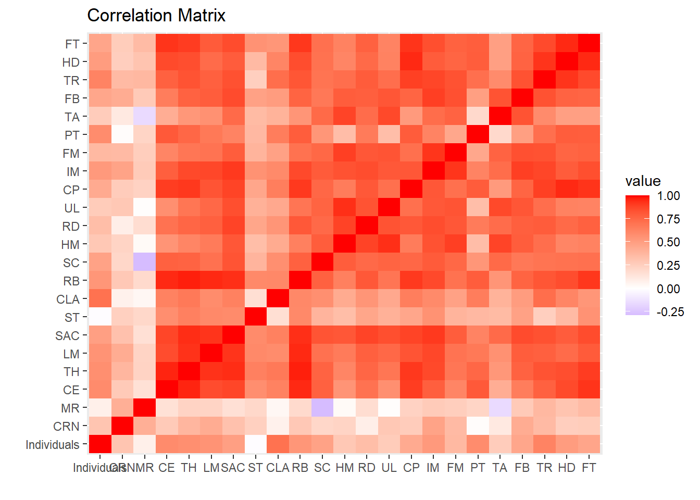
corrplot(cor_matrix, #correlation matrix
method = "color", #show coloured blocks
is.corr = TRUE, #input matrix is a correlation matrix
type = "upper", #show only upper diagonal of correlogram
order = "AOE", #Hierarchical clustering order
hclust.method = "average", #using the average linkage distance measure
addCoef.col = "black", #show numerical value of coefficient
tl.col = "black", #text color of data label
tl.cex = 0.5, #text size of data label
rect.lwd = 3,#text size of data label
tl.srt = 90, #text rotation of data label
cl.cex = 1, #text size of color-legend label
number.cex = 0.5, #text size of correlation coefficient
diag = FALSE, #hide coefficient on the principal diagonal
)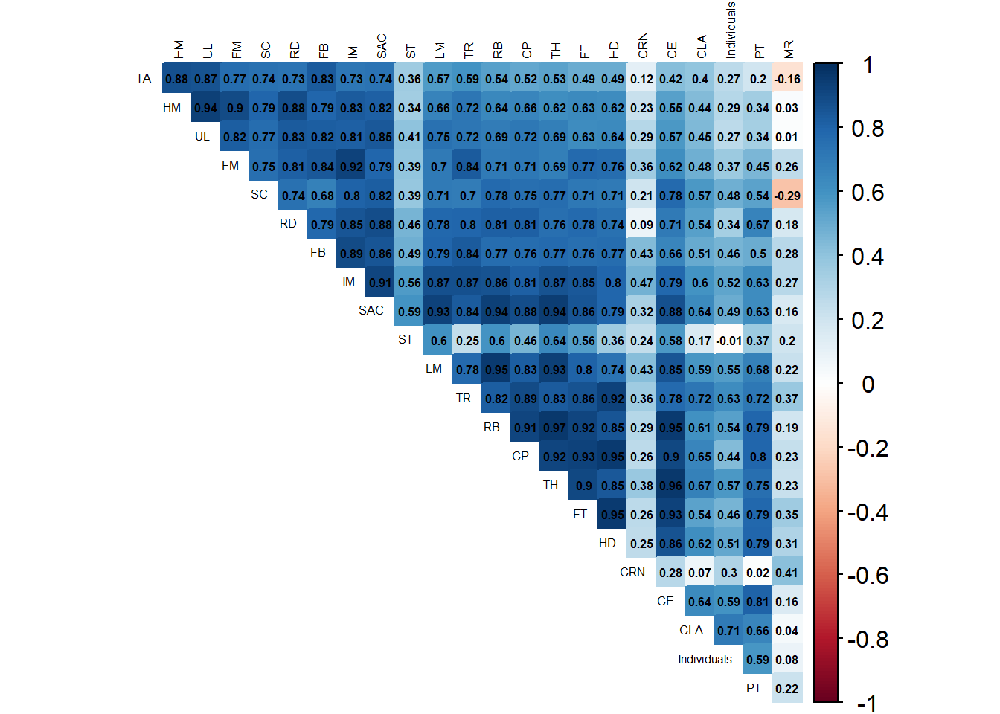
corrplot(cor_matrix, #correlation matrix
method = "color", #show coloured blocks
is.corr = TRUE, #input matrix is a correlation matrix
type = "upper", #show only upper diagonal of correlogram
order = "hclust", #Hierarchical clustering order
hclust.method = "average", #using the average linkage distance measure
addCoef.col = "black", #show numerical value of coefficient
tl.col = "black", #text color of data label
tl.cex = 0.5, #text size of data label
rect.lwd = 3,#text size of data label
tl.srt = 90, #text rotation of data label
cl.cex = 1, #text size of color-legend label
number.cex = 0.5, #text size of correlation coefficient
diag = FALSE, #hide coefficient on the principal diagonal
)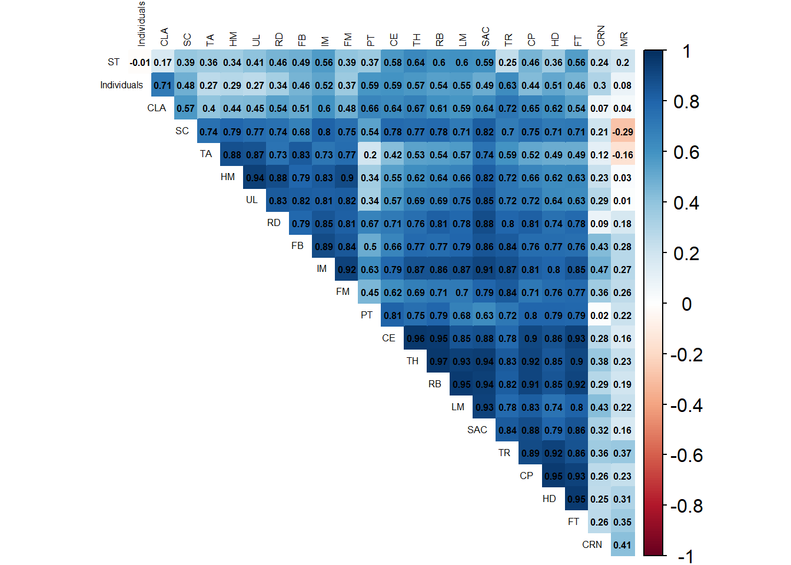
Based on feature correlation and clustering, merge bone subcategories into its categories:
“Vertebra”= {“Cervical”, “Thoracic”, “Lumbar”, “Sacrum”,“Rib”}
“Arm” = {“Humerus”, “Radius”, “Ulna”}
“Leg” = {“Femur”, “Tibia”, “Fibula” }
“Extremities”: {“Carpal”, “Tarsal”, “Hand..metacarpals…manual.phalanges.”, “Foot..metatarsals…pedal.phal
## Define data_cor data set
data_cor = merge_bone_cat_by_mean(data)Define list of data sets to work with:
list_of_dfs <- list(data, data[columns_rf_sup] , data[columns_rf], data_cor)Dimension Reduction
PCA
# PCA
data_pca <- data |> select(-all_of(columns_to_count))
pca_result <- prcomp(data_pca, center = TRUE, scale. = TRUE)
X_pca <- pca_result$x[,1:6]
X_pca PC1 PC2 PC3 PC4
Pottery_Mound_Pueblo_IV 6.5343488 1.04183174 -1.62068791 1.51312957
Kuaua_Pueblo_Pueblo_IV 4.4464383 -0.18442611 -0.12490264 1.38563607
Skhul_Layer_B 1.7501560 -1.15855565 1.26911302 0.03072110
Fontbregoua_H1 -4.7091572 0.97311388 0.52136979 -0.08043723
Fontbregoua_H3 -2.7920854 -3.55001828 -2.79032342 -0.51826972
Gran_Dolina_TD6 -4.1048592 2.03319265 -1.69046489 0.73100476
El_Mirador_MIR4A -4.8622951 0.86940134 0.66556363 -0.54794530
Krapina -3.0791583 0.43303913 -0.25594394 -0.22140683
AL_333 -3.7217158 0.64488274 0.66129390 0.61410622
Unscavenged_human_corpses_WA 6.1332572 1.02460699 -0.35071841 -1.64278614
Scavenged_human_corpses_WA 2.8424315 1.28650347 0.02313072 -1.92993169
Mapungubwe_leopard_kills 1.8208594 -1.15727791 1.26833551 -0.67389809
Leopard_refuse 0.7305558 -1.70607284 1.81916920 0.79459362
Misgrot_Cave -0.7632471 -0.56882783 -0.26436222 -0.63795115
Dinaledi -0.2255286 0.01860669 0.86942766 1.18343484
PC5 PC6
Pottery_Mound_Pueblo_IV -1.0170555 -0.18559065
Kuaua_Pueblo_Pueblo_IV -0.6232359 0.50487467
Skhul_Layer_B 0.4506761 1.59618821
Fontbregoua_H1 -0.7569773 0.16583315
Fontbregoua_H3 0.1450813 0.19187723
Gran_Dolina_TD6 1.9262280 0.25639056
El_Mirador_MIR4A -0.8095736 -0.18942445
Krapina -1.0204259 -0.01717399
AL_333 0.4236874 -0.08483413
Unscavenged_human_corpses_WA 1.1885105 -0.91617730
Scavenged_human_corpses_WA -0.4257198 0.89892370
Mapungubwe_leopard_kills 0.4260567 0.05631428
Leopard_refuse 0.5922102 -0.93054690
Misgrot_Cave -0.8804619 -1.09964992
Dinaledi 0.3809999 -0.24700445## Plot 3D pca
df_X_pca = as.data.frame(X_pca)
plot_ly(df_X_pca,x=~PC1,y=~PC2,z=~PC3, color = ~label, type = 'scatter3d', mode = 'markers')Warning in RColorBrewer::brewer.pal(N, "Set2"): n too large, allowed maximum for palette Set2 is 8
Returning the palette you asked for with that many colors
Warning in RColorBrewer::brewer.pal(N, "Set2"): n too large, allowed maximum for palette Set2 is 8
Returning the palette you asked for with that many colors# Perform PCA
pca_result <- prcomp(data_pca, scale. = TRUE)
# Calculate cumulative variance explained by each component
var_explained <- cumsum(pca_result$sdev^2 / sum(pca_result$sdev^2))
# Optional: Create a scree plot to visualize the variance explained
ggplot(as.data.frame(var_explained), aes(x = seq_along(var_explained), y = var_explained)) +
geom_line() +
geom_point() +
geom_hline(yintercept = 0.95, linetype = "dashed", color = "red") +
xlab("Number of Principal Components") +
ylab("Cumulative Variance Explained") +
ggtitle("Scree Plot Showing Cumulative Variance Explained by PCA Components")
LDA
#library(MASS)
# LDA
#cols_lda <- setdiff(names(data), c("Type","Individuals", "Cluster_Pnas"))
#data_lda <- data[cols_lda]
#lda_result <- lda(AccumulationType ~ ., data = data_lda)
#X_lda <- as.data.frame(predict(lda_result, newdata = data_lda)$x)
# Create a 3D scatter
#plot_ly(X_lda, x = ~LD1, y = ~LD2, z = ~LD3, color = ~data$AccumulationType, type = 'scatter3d', mode = 'markers')# LDA
#cols_lda <- setdiff(names(data), c("AccumulationType","Individuals", "Cluster_Pnas"))
#data_lda <- data[cols_lda]
#lda_result <- lda(Type ~ ., data = data_lda)
#X_lda <- as.data.frame(predict(lda_result, newdata = data_lda)$x)
# Create a 3D scatter
#plot_ly(X_lda, x = ~LD1, y = ~LD2, z = ~LD3, color = ~data$Type, type = 'scatter3d', mode = 'markers')amend Dataframe list with X_pca[,c(1:6)] and X_lda
list_of_dfs <- list(data, data[, columns_rf_sup], data[, columns_rf], data_cor, X_pca[, 1:6]
#,X_lda
)Best K
Ellbow method
library(cluster)
library(broom)
set.seed(42)
cols_km <- setdiff(names(data), c("Type","AccumulationType","Individuals", "Cluster_Pnas"))
data_km <- data[cols_km]
# Create 10 models with 1 to 10 clusters
kclusts <- tibble(k = 1:7) %>%
mutate(
model = map(k, ~ kmeans(x = data_km, centers = .x, nstart = 20)),
glanced = map(model, glance)
) %>%
unnest(cols = c(glanced))
# View results
kclusts%>%
ggplot(mapping = aes(x = k, y = tot.withinss)) +
geom_line(size = 1.2, alpha = 0.5, color = "blue") +
geom_point(size = 2, color = "blue")Warning: Using `size` aesthetic for lines was deprecated in ggplot2 3.4.0.
ℹ Please use `linewidth` instead.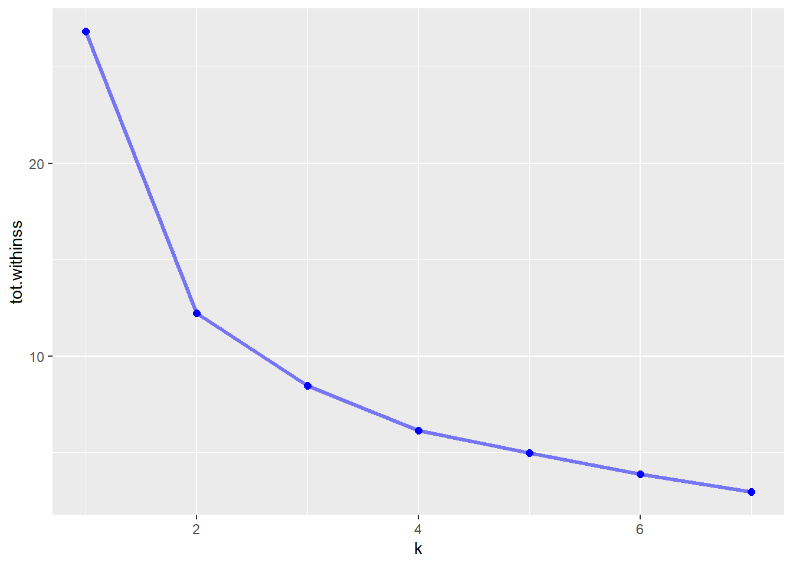
library(cluster)
library(factoextra)
#create plot of number of clusters vs total within sum of squares
fviz_nbclust(data_km, kmeans, method = "wss")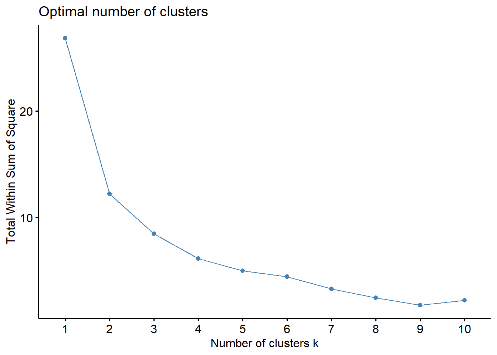
Silhouette method
fviz_nbclust(data_km, FUN=kmeans, method = "silhouette")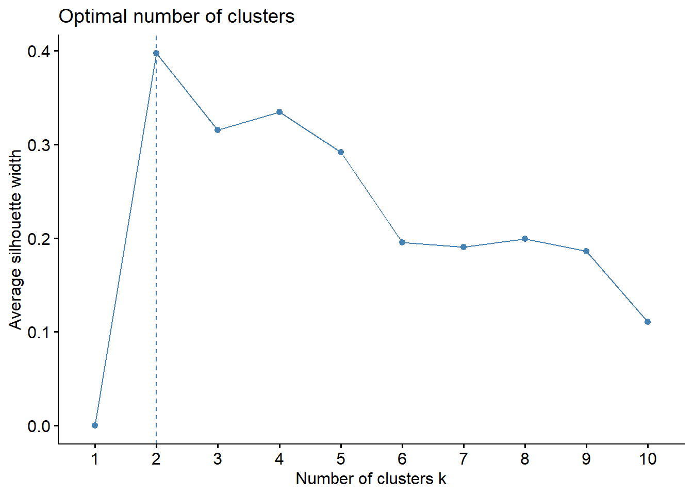
gap_stat <- clusGap(data_km, FUN = kmeans, nstart = 25, K.max = 10, B = 50)
fviz_gap_stat(gap_stat)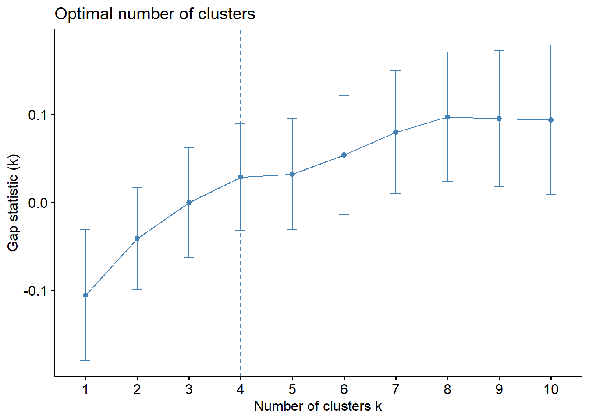
Modeling
# Load necessary libraries
library(factoextra)
library(cluster)
#Perform K-means clustering
set.seed(42)
kmeans_result <- kmeans(data_km, centers = 3, nstart = 25)
# The cluster assignments are stored in kmeans_result$cluster
sub_grp <- kmeans_result$cluster
# Visualize the clusters
fviz_cluster(list(data = data_km, cluster = sub_grp))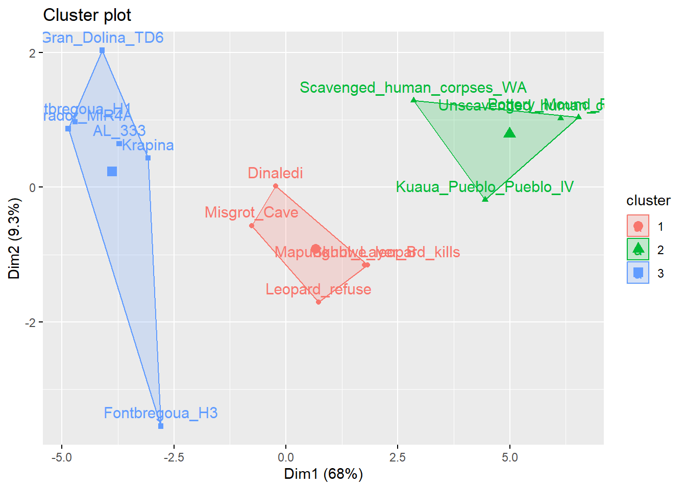
Eval
# Perform K-means clustering on the training set
set.seed(42)
kmeans_result <- kmeans(data_km, centers = 3, nstart = 25)
# Assign test set points to nearest clusters
get_nearest_cluster <- function(point, centers) {
distances <- apply(centers, 1, function(center) dist(rbind(center, point)))
return(which.min(distances))
}
# Apply the function to each row in the test set
cluster_assignments_test <- apply(sh, 1, get_nearest_cluster, centers = kmeans_result$centers)Warning in rbind(center, point): number of columns of result is not a multiple
of vector length (arg 1)Warning in dist(rbind(center, point)): NAs introduced by coercionWarning in rbind(center, point): number of columns of result is not a multiple
of vector length (arg 1)Warning in dist(rbind(center, point)): NAs introduced by coercionWarning in rbind(center, point): number of columns of result is not a multiple
of vector length (arg 1)Warning in dist(rbind(center, point)): NAs introduced by coercionsh_km = sh[cols_km]
# Combine the training and test sets for visualization
combined_df <- rbind(data_km, sh_km)
combined_clusters <- c(kmeans_result$cluster, cluster_assignments_test)
# Visualize with fviz_cluster
fviz_cluster(list(data = combined_df, cluster = combined_clusters))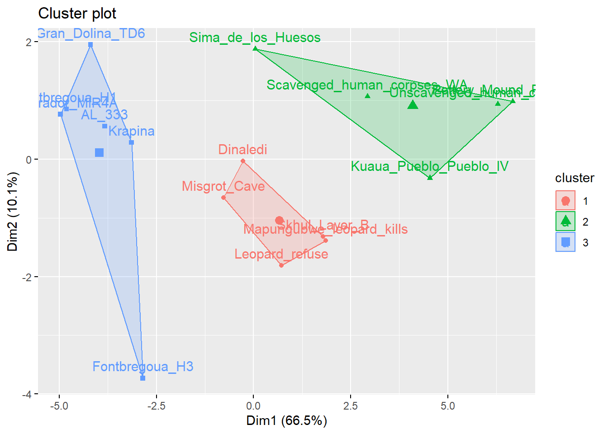
Multivar.
#data <- read.csv('../Input/DATA/Summary_Dataset_Multivar_Percentage_MAU.csv')data = data_multi #preprocess(data)
glimpse(data)Rows: 38
Columns: 25
$ Type <chr> "Primary hominin interment", "Pr…
$ AccumulationType <chr> "Burial", "Burial", "Burial", "B…
$ Individuals <int> 6, 49, 84, 1, 2, 6, 2, 1, 1, 1, …
$ Cranium <dbl> 1.0000000, 0.8837209, 1.0000000,…
$ Mandible <dbl> 1.0000000, 0.7906977, 0.9411765,…
$ Cervical <dbl> 0.71428571, 0.84385382, 0.605042…
$ Thoracic <dbl> 0.95833333, 0.87596899, 0.654411…
$ Lumbar <dbl> 0.8333333, 0.8976744, 0.7411765,…
$ Sacrum <dbl> 1.0000000, 0.9069767, 0.7647059,…
$ Sternum <dbl> 1.00000000, 0.00000000, 0.000000…
$ Clavicle <dbl> 1.0000000, 0.9418605, 0.7573529,…
$ Rib <dbl> 0.95833333, 0.87306202, 0.608455…
$ Scapula <dbl> 1.0000000, 0.9069767, 0.7720588,…
$ Humerus <dbl> 1.0000000, 0.8488372, 0.9485294,…
$ Radius <dbl> 1.0000000, 0.8953488, 0.8897059,…
$ Ulna <dbl> 1.0000000, 0.8604651, 0.8014706,…
$ Carpal <dbl> 0.72916667, 0.75581395, 0.356617…
$ Innominate <dbl> 1.0000000, 0.8953488, 0.8823529,…
$ Femur <dbl> 1.0000000, 1.0000000, 0.9779412,…
$ Patella <dbl> 0.91666667, 0.79069767, 0.566176…
$ Tibia <dbl> 1.0000000, 0.7674419, 0.8897059,…
$ Fibula <dbl> 1.0000000, 0.7906977, 0.7647059,…
$ Tarsal <dbl> 0.86904762, 0.72093023, 0.600840…
$ Hand..metacarpals...manual.phalanges. <dbl> 0.802631579, 0.750917993, 0.4616…
$ Foot..metatarsals...pedal.phalanges. <dbl> 0.258771930, 0.497552020, 0.3370…rownames(data) [1] "Hummingbird_Pueblo_Pueblo_I" "Pottery_Mound_Pueblo_IV"
[3] "Kuaua_Pueblo_Pueblo_IV" "Dolni_Vestonice_I_DV_3"
[5] "Dolni_Vestonice_IITriple_Burial" "Skhul_Layer_B"
[7] "Qafzeh_Couche_XVII" "Regourdou"
[9] "La_Chapelle_aux_Saints" "Tabun_Layer_C"
[11] "Shanidar_Layer_D_Upper" "Shanidar_Layer_D_Lower"
[13] "Kebara_Couche_XII" "Fontbregoua_H1"
[15] "Fontbregoua_H3" "Gran_Dolina_TD6"
[17] "El_Mirador_MIR4A" "Gough's_Cave"
[19] "5MT_3" "5MT_10010_Feature_3"
[21] "El_Miron" "La_Tolita_Cama_de_Huesos"
[23] "Crow_Creek" "Krapina"
[25] "Liang_Bua_Layer_R" "Liang_Bua_Layer_OQ"
[27] "Dmanisi_Layer_B1y" "Malapa"
[29] "AL_333" "Unscavenged_human_corpses_WA"
[31] "Scavenged_human_corpses_WA" "Scavenged_human_corpses_NM"
[33] "Scavenged_human_corpse_NC" "Mapungubwe_leopard_kills"
[35] "Leopard_refuse" "Misgrot_Cave"
[37] "Sima_de_los_Huesos" "Dinaledi" # Define the columns for which you want to count the labels
columns_to_count <- c("Type", "AccumulationType", "Individuals")
# Function to count labels in each specified column
count_labels <- function(data, columns) {
sapply(data[columns], function(column) table(column))
}
# Use the function to count labels
label_counts <- count_labels(data, columns_to_count)
# Print the counts
label_counts$Type
column
Hominin cannibalism/ secondary interment
10
Leopard refuse
2
Natural Baboon accumulation
1
Nonanthropogenic hominin accumulation
5
Possible hominin deliberate disposal
2
Possible Primary hominin interment
9
Primary hominin interment
5
Scavenged human corpses
3
Unscavenged human corpses
1
$AccumulationType
column
Burial Cannibalism/Mass Grave
16 10
Carnivore intervention Non-human/ non-carnivore intervention
5 7
$Individuals
column
1 2 3 4 5 6 7 8 10 11 13 17 18 43 45 49 84 476
8 4 2 2 2 4 4 1 1 1 2 1 1 1 1 1 1 1 Take SH out of the training set (to avoid data leakage)
split <- split_train_SH(data)
data <- split$train_data
sh <- split$sh_dataCenter and scale numeric data
Normalize numeric data to have a standard deviation of one and a mean of zero.
# Store original row names of the datasets
data_row_names <- rownames(data)
sh_row_names <- rownames(sh)
# Step 1: Create a recipe
recipe <- recipe(~ ., data = data) %>%
step_normalize(all_predictors(), -all_of(c("Type", "AccumulationType", "Individuals")))
# Step 2: Fit the recipe to the training set
fitted_recipe <- prep(recipe, training = data)
# Step 3: Apply the transformation to both training and test sets
data_transformed <- bake(fitted_recipe, new_data = data)
sh_transformed <- bake(fitted_recipe, new_data = sh)
# Reattach the row names
rownames(data_transformed) <- data_row_names
rownames(sh_transformed) <- sh_row_namesFeature selection
In Pnas RF with labels has been used (!data leakage).
# Ensure reproducibility
set.seed(42)
# Prepare the label and features
label <- data$Type
data_rf_sup <- data %>% select(-c("Type", "AccumulationType", "Individuals"))
# Convert 'Type' to a factor
label <- as.factor(data$Type)
# Train the RandomForest model
rf_model_sup <- randomForest(x = data_rf_sup, y = label, importance = TRUE)
# Get the feature importance
feature_importance_ <- importance(rf_model_sup)
# Print the feature importance
feature_importance_[,c(10:11)][] MeanDecreaseAccuracy MeanDecreaseGini
Cranium 1.7963467 0.7247550
Mandible -2.7100746 0.5507058
Cervical 1.5426620 1.2611632
Thoracic 4.1242439 1.9729354
Lumbar 2.7954179 1.3714015
Sacrum 6.0542041 1.3517958
Sternum -1.7508325 0.5331854
Clavicle 4.3211615 1.4112329
Rib 4.5447728 2.6469973
Scapula 0.8971814 1.0848041
Humerus 1.2815168 1.1394029
Radius 3.0244827 1.5504042
Ulna 2.6900930 1.3983330
Carpal 5.0449384 2.1067199
Innominate 1.5478926 1.1089320
Femur 2.6863956 1.4346540
Patella 0.9909530 1.0365759
Tibia -0.6895349 0.8117103
Fibula 2.5702489 1.2029680
Tarsal 5.1013495 1.6670031
Hand..metacarpals...manual.phalanges. 4.4560772 1.8217898
Foot..metatarsals...pedal.phalanges. 0.8433418 1.3823323# Selecting MeanDecreaseAccuracy
mean_decrease_accuracy <- feature_importance_[, "MeanDecreaseAccuracy"]
# Filter features where MeanDecreaseAccuracy is greater than 5
important_features_ <- feature_importance_[mean_decrease_accuracy > 3.4, ]
# Print the important features
important_features_[,c(10:11)] MeanDecreaseAccuracy MeanDecreaseGini
Thoracic 4.124244 1.972935
Sacrum 6.054204 1.351796
Clavicle 4.321162 1.411233
Rib 4.544773 2.646997
Carpal 5.044938 2.106720
Tarsal 5.101349 1.667003
Hand..metacarpals...manual.phalanges. 4.456077 1.821790# Save top 7 features
columns_rf_sup<- rownames(as.data.frame(important_features_[,c(10:11)]))
columns_rf_sup[1] "Thoracic"
[2] "Sacrum"
[3] "Clavicle"
[4] "Rib"
[5] "Carpal"
[6] "Tarsal"
[7] "Hand..metacarpals...manual.phalanges."Random Forrest feature importance with self-label (without data leakage)
set.seed(42)
data_rf <- data |> select(-c("Type", "AccumulationType", "Individuals"))
# Create artificial labels where each row is its own class
artificial_labels <- seq_len(nrow(data_rf))
# Combine the data with the artificial labels
data_with_labels <- cbind(data_rf, artificial_labels)
# Train Random Forest model
rf_model <- randomForest(artificial_labels ~ ., data = data_with_labels, importance = TRUE)
# Extract feature importance based on Mean Decrease in Gini
feature_importance <- importance(rf_model) # type = 1 for %IncMSE
feature_importance %IncMSE IncNodePurity
Cranium -0.05184391 65.24773
Mandible -2.24104497 56.41817
Cervical 1.87504487 141.83069
Thoracic -1.91603802 149.68878
Lumbar -1.95917667 83.01549
Sacrum -0.15151774 151.11217
Sternum -1.01247063 48.44552
Clavicle 6.28435557 348.71849
Rib -0.98683230 137.30406
Scapula -1.32328563 44.16902
Humerus -1.24247691 158.56492
Radius 5.95221576 487.91822
Ulna 10.25178184 742.58779
Carpal 2.32303521 199.48244
Innominate 0.99672781 95.33138
Femur 2.20127910 230.89512
Patella -3.72943920 60.19535
Tibia -2.16143758 86.91677
Fibula 1.93494095 109.14194
Tarsal 1.16020994 218.29187
Hand..metacarpals...manual.phalanges. 2.44588722 161.92745
Foot..metatarsals...pedal.phalanges. -1.97776611 139.57475We are going to use names(featrue_importance[feature_importance > 2])
# Selecting MeanDecreaseAccuracy
mean_decrease_accuracy <- feature_importance[,"%IncMSE"]
# Filter features where MeanDecreaseAccuracy is greater than 5
important_features_ <- feature_importance_[mean_decrease_accuracy > 2, ]
# Print the important features
columns_rf <- rownames(important_features_[,c(10:11)])
columns_rf[1] "Clavicle"
[2] "Radius"
[3] "Ulna"
[4] "Carpal"
[5] "Femur"
[6] "Hand..metacarpals...manual.phalanges."Unsupervised Feature Selection with Random Forests (UFSRF)
#TodoSHAP
#TodoFeature correlation heatmap
data_plot_cor = abbreviated_columns_multi(data)# Correlation matrix
cor_matrix <- cor(data_plot_cor[sapply(data_plot_cor, is.numeric)], use = "complete.obs")
melted_cor_matrix <- melt(cor_matrix)
ggplot(melted_cor_matrix, aes(Var1, Var2, fill = value)) +
geom_tile() +
scale_fill_gradient2(low = "blue", high = "red", mid = "white", midpoint = 0) +
#theme(axis.text.x = element_text(angle = 90, vjust = 0.5, hjust=1)) + # Rotate x-axis labels
#theme_minimal() +
labs(title = "Correlation Matrix", x = "", y = "")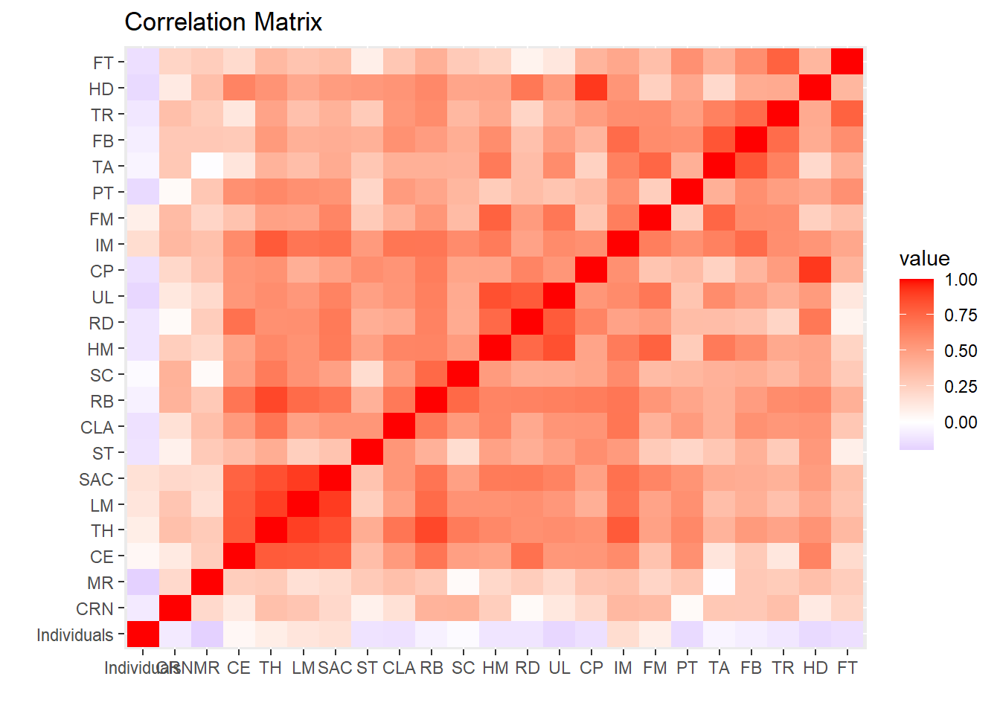
corrplot(cor_matrix, #correlation matrix
method = "color", #show coloured blocks
is.corr = TRUE, #input matrix is a correlation matrix
type = "upper", #show only upper diagonal of correlogram
order = "AOE", #Hierarchical clustering order
hclust.method = "average", #using the average linkage distance measure
addCoef.col = "black", #show numerical value of coefficient
tl.col = "black", #text color of data label
tl.cex = 0.5, #text size of data label
rect.lwd = 3,#text size of data label
tl.srt = 90, #text rotation of data label
cl.cex = 1, #text size of color-legend label
number.cex = 0.5, #text size of correlation coefficient
diag = FALSE, #hide coefficient on the principal diagonal
)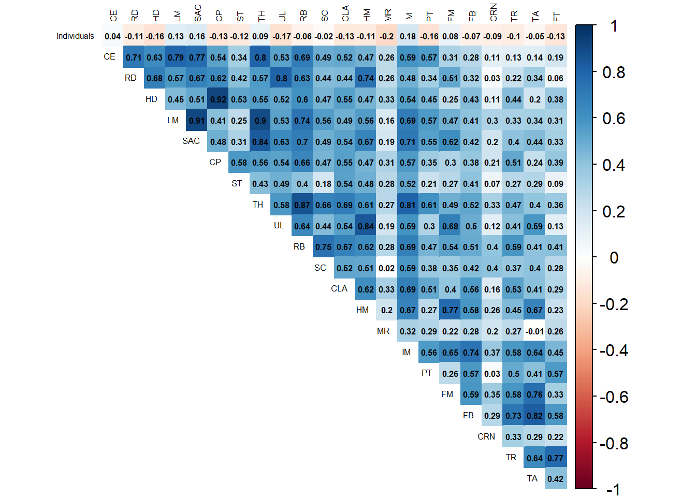
corrplot(cor_matrix, #correlation matrix
method = "color", #show coloured blocks
is.corr = TRUE, #input matrix is a correlation matrix
type = "upper", #show only upper diagonal of correlogram
order = "hclust", #Hierarchical clustering order
hclust.method = "average", #using the average linkage distance measure
addCoef.col = "black", #show numerical value of coefficient
tl.col = "black", #text color of data label
tl.cex = 0.5, #text size of data label
rect.lwd = 3,#text size of data label
tl.srt = 90, #text rotation of data label
cl.cex = 1, #text size of color-legend label
number.cex = 0.5, #text size of correlation coefficient
diag = FALSE, #hide coefficient on the principal diagonal
)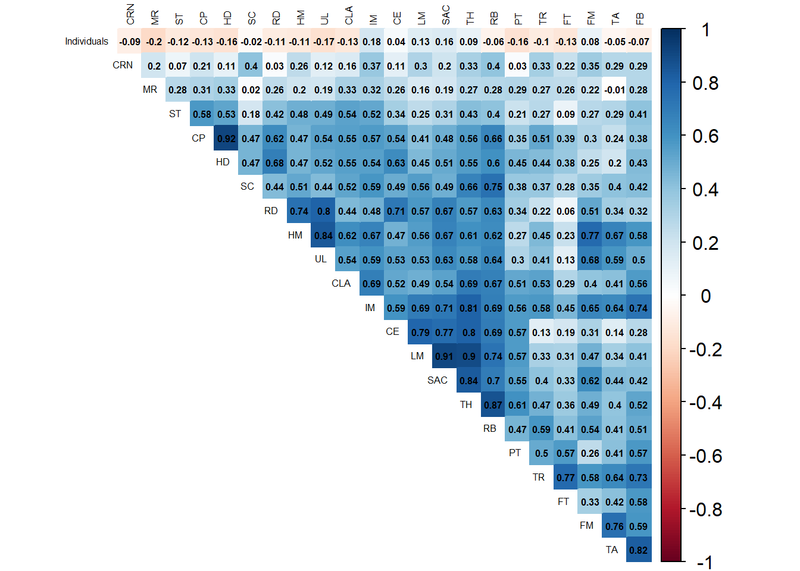
Based on feature correlation and clustering, merge bone subcategories into its categories:
“Vertebra”= {“Cervical”, “Thoracic”, “Lumbar”, “Sacrum”,“Rib”}
“Arm” = {“Humerus”, “Radius”, “Ulna”}
“Leg” = {“Femur”, “Tibia”, “Fibula” }
“Extremities”: {“Carpal”, “Tarsal”, “Hand..metacarpals…manual.phalanges.”, “Foot..metatarsals…pedal.phal
## Define data_cor data set
data_cor = merge_bone_cat_by_mean(data)Define list of data sets to work with:
list_of_dfs <- list(data, data[columns_rf_sup] , data[columns_rf], data_cor)Dimension Reduction
PCA
# PCA
data_pca <- data |> select(-all_of(columns_to_count))
pca_result <- prcomp(data_pca, center = TRUE, scale. = TRUE)
X_pca <- pca_result$x[,1:6]
X_pca PC1 PC2 PC3 PC4
Hummingbird_Pueblo_Pueblo_I -5.9935754 -0.32390961 -0.44549197 -1.00251454
Pottery_Mound_Pueblo_IV -4.6098415 -0.45531311 -0.88491631 0.63709578
Kuaua_Pueblo_Pueblo_IV -2.9830206 0.28506051 0.34198439 0.58568015
Dolni_Vestonice_I_DV_3 -5.3812883 -0.68897820 -0.06228553 1.18513006
Dolni_Vestonice_IITriple_Burial -4.9971751 -0.90079226 0.90782082 0.81300422
Skhul_Layer_B -0.7646480 0.37214723 1.41966415 -0.76355557
Qafzeh_Couche_XVII -2.4411226 2.71683841 -1.43345582 -2.58855867
Regourdou -3.3986774 -2.28108314 -1.07145649 -2.07472507
La_Chapelle_aux_Saints -2.6078793 -0.57836154 1.24292596 1.57288431
Tabun_Layer_C -2.3240401 2.30329092 0.82091382 -2.68510469
Shanidar_Layer_D_Upper -1.6140040 1.20618433 0.58564242 1.18675854
Shanidar_Layer_D_Lower 0.8512290 0.07658943 0.33897240 0.34533269
Kebara_Couche_XII -3.7862353 -5.01290418 -0.30218720 -0.72748940
Fontbregoua_H1 5.0886774 -0.24924761 -0.57045498 0.20431574
Fontbregoua_H3 3.6100223 -0.12943520 2.83644485 0.35781559
Gran_Dolina_TD6 4.7037244 -1.38322407 -1.48823667 -0.72539105
El_Mirador_MIR4A 5.2335786 -0.19219511 -0.52457766 0.45354646
Gough's_Cave 1.4096019 -0.51528799 1.90135228 -0.58024378
5MT_3 2.5110347 -0.24779441 -0.98134435 -0.87422989
5MT_10010_Feature_3 0.6078279 -1.03952206 0.32510944 0.75773577
El_Miron -0.1770541 1.22771465 -4.51425588 1.44680235
La_Tolita_Cama_de_Huesos 1.0799466 1.43828167 1.74021113 -0.71687745
Crow_Creek 1.5803767 -0.43075897 0.96140337 1.75301924
Krapina 3.7255334 0.07698320 -0.11496071 0.88545616
Liang_Bua_Layer_R 1.7448501 2.16139322 -0.12782318 -1.13536152
Liang_Bua_Layer_OQ 4.5602395 -2.16850873 -1.45288801 -0.85315187
Dmanisi_Layer_B1y 5.4270033 -0.18620258 -0.90533267 0.51792461
Malapa -0.9746416 0.69226052 0.07568425 -2.37334685
AL_333 4.2625712 0.09485554 -0.43018084 -0.69824977
Unscavenged_human_corpses_WA -4.2050851 -0.77169060 -0.60477217 0.06946289
Scavenged_human_corpses_WA -1.5413854 -0.58034654 -0.50830042 1.07521729
Scavenged_human_corpses_NM 2.4149282 0.04497803 0.16286637 1.17286436
Scavenged_human_corpse_NC -3.4214451 3.71998833 -1.30535583 2.62651053
Mapungubwe_leopard_kills -0.7561559 0.09673914 1.58894965 0.42832357
Leopard_refuse 0.2660405 1.02323279 1.52823158 -0.28307474
Misgrot_Cave 1.6838000 -0.53914045 0.91274608 0.70353001
Dinaledi 1.2162890 1.13815844 0.03735376 -0.69653545
PC5 PC6
Hummingbird_Pueblo_Pueblo_I -0.35804910 0.50276281
Pottery_Mound_Pueblo_IV 0.07977294 1.23809174
Kuaua_Pueblo_Pueblo_IV -0.04105487 -0.14719678
Dolni_Vestonice_I_DV_3 0.26489978 -0.08585457
Dolni_Vestonice_IITriple_Burial 0.43286695 -0.92222796
Skhul_Layer_B -0.24284090 -0.95191363
Qafzeh_Couche_XVII -0.31959606 0.86236381
Regourdou 3.43442622 -0.57834846
La_Chapelle_aux_Saints 1.25766102 -1.64676168
Tabun_Layer_C -1.48170333 -0.01004903
Shanidar_Layer_D_Upper 0.12003090 0.99651566
Shanidar_Layer_D_Lower -0.23607975 0.28692632
Kebara_Couche_XII -2.48795695 0.21116835
Fontbregoua_H1 -0.99020000 -0.61187668
Fontbregoua_H3 1.89826515 3.80073301
Gran_Dolina_TD6 1.69703218 -0.63397273
El_Mirador_MIR4A -0.95303659 -0.35419446
Gough's_Cave -0.34217520 -0.73587315
5MT_3 0.51418184 -0.54263159
5MT_10010_Feature_3 -1.00332561 1.45602016
El_Miron -0.50744863 0.82017513
La_Tolita_Cama_de_Huesos 0.64221658 -1.00471314
Crow_Creek 0.47458488 -0.13516261
Krapina -0.38294900 0.45257814
Liang_Bua_Layer_R 1.29004580 0.45421465
Liang_Bua_Layer_OQ 1.23940481 0.28034276
Dmanisi_Layer_B1y -0.90096046 -0.13904121
Malapa -1.09910895 0.50613861
AL_333 -0.04348291 -0.93046095
Unscavenged_human_corpses_WA 0.26215940 0.52728626
Scavenged_human_corpses_WA -0.43889840 -0.42436418
Scavenged_human_corpses_NM -0.44750596 -0.90980162
Scavenged_human_corpse_NC 0.72475542 -0.56516014
Mapungubwe_leopard_kills -0.31508216 -0.53473873
Leopard_refuse -0.51912209 -0.78047857
Misgrot_Cave -0.93233746 0.93963438
Dinaledi -0.28938949 -0.69012992## Plot 3D pca
df_X_pca = as.data.frame(X_pca)
plot_ly(df_X_pca,x=~PC1,y=~PC2,z=~PC3, color = ~label, type = 'scatter3d', mode = 'markers')Warning in RColorBrewer::brewer.pal(N, "Set2"): n too large, allowed maximum for palette Set2 is 8
Returning the palette you asked for with that many colors
Warning in RColorBrewer::brewer.pal(N, "Set2"): n too large, allowed maximum for palette Set2 is 8
Returning the palette you asked for with that many colors# Perform PCA
pca_result <- prcomp(data_pca, scale. = TRUE)
# Calculate cumulative variance explained by each component
var_explained <- cumsum(pca_result$sdev^2 / sum(pca_result$sdev^2))
# Optional: Create a scree plot to visualize the variance explained
ggplot(as.data.frame(var_explained), aes(x = seq_along(var_explained), y = var_explained)) +
geom_line() +
geom_point() +
geom_hline(yintercept = 0.95, linetype = "dashed", color = "red") +
xlab("Number of Principal Components") +
ylab("Cumulative Variance Explained") +
ggtitle("Scree Plot Showing Cumulative Variance Explained by PCA Components")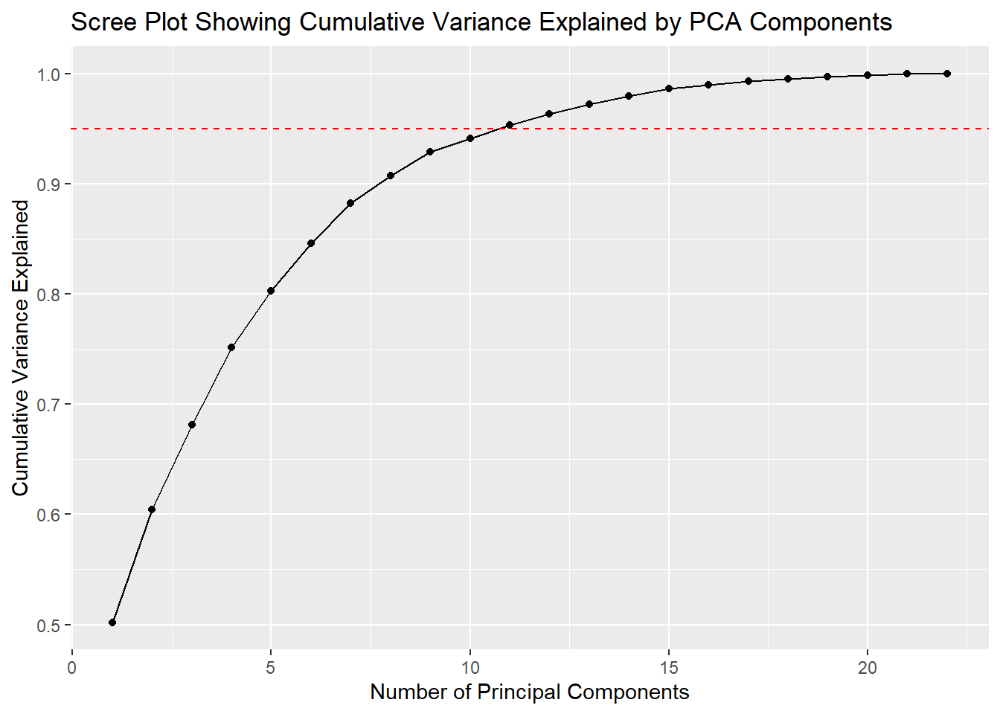
LDA
bottom page
library(MASS)
Attaching package: 'MASS'The following object is masked from 'package:plotly':
selectThe following object is masked from 'package:dplyr':
select# LDA
cols_lda <- setdiff(names(data), c("Type","Individuals", "Cluster_Pnas"))
data_lda <- data[cols_lda]
lda_result <- lda(AccumulationType ~ ., data = data_lda)
X_lda <- as.data.frame(predict(lda_result, newdata = data_lda)$x)
# Create a 3D scatter
plot_ly(X_lda, x = ~LD1, y = ~LD2, z = ~LD3, color = ~data$AccumulationType, type = 'scatter3d', mode = 'markers')# LDA
cols_lda <- setdiff(names(data), c("AccumulationType","Individuals", "Cluster_Pnas"))
data_lda <- data[cols_lda]
lda_result <- lda(Type ~ ., data = data_lda)
X_lda <- as.data.frame(predict(lda_result, newdata = data_lda)$x)
# Create a 3D scatter
plot_ly(X_lda, x = ~LD1, y = ~LD2, z = ~LD3, color = ~data$Type, type = 'scatter3d', mode = 'markers')Warning in RColorBrewer::brewer.pal(N, "Set2"): n too large, allowed maximum for palette Set2 is 8
Returning the palette you asked for with that many colors
Warning in RColorBrewer::brewer.pal(N, "Set2"): n too large, allowed maximum for palette Set2 is 8
Returning the palette you asked for with that many colorsamend Dataframe list with X_pca[,c(1:6)] and X_lda
list_of_dfs <- list(data, data[, columns_rf_sup], data[, columns_rf], data_cor, X_pca[, 1:6], X_lda)Best K
Ellbow method
library(cluster)
library(broom)
set.seed(42)
cols_km <- setdiff(names(data), c("Type","AccumulationType","Individuals", "Cluster_Pnas"))
data_km <- data[cols_km]
# Create 10 models with 1 to 10 clusters
kclusts <- tibble(k = 1:7) %>%
mutate(
model = map(k, ~ kmeans(x = data_km, centers = .x, nstart = 20)),
glanced = map(model, glance)
) %>%
unnest(cols = c(glanced))
# View results
kclusts%>%
ggplot(mapping = aes(x = k, y = tot.withinss)) +
geom_line(size = 1.2, alpha = 0.5, color = "blue") +
geom_point(size = 2, color = "blue")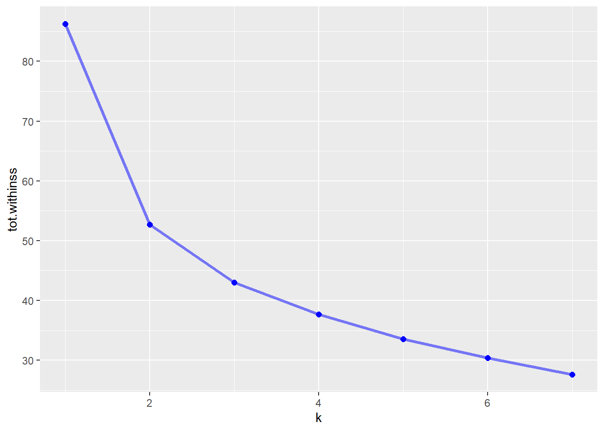
library(cluster)
library(factoextra)
#create plot of number of clusters vs total within sum of squares
fviz_nbclust(data_km, kmeans, method = "wss")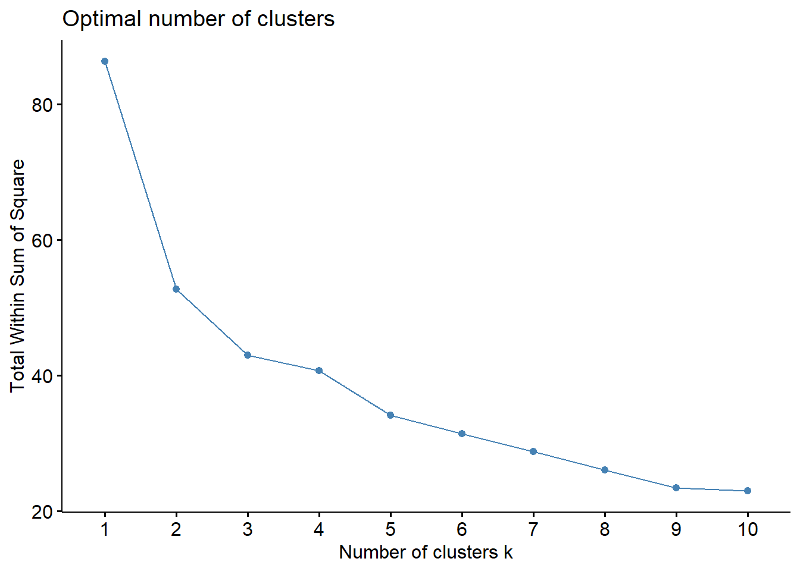
Silhouette method
fviz_nbclust(data_km, FUN=kmeans, method = "silhouette")
gap_stat <- clusGap(data_km, FUN = kmeans, nstart = 25, K.max = 10, B = 50)
fviz_gap_stat(gap_stat)Modeling
# Load necessary libraries
library(factoextra)
library(cluster)
#Perform K-means clustering
set.seed(42)
kmeans_result <- kmeans(data_km, centers = 3, nstart = 25)
# The cluster assignments are stored in kmeans_result$cluster
sub_grp <- kmeans_result$cluster
# Visualize the clusters
fviz_cluster(list(data = data_km, cluster = sub_grp))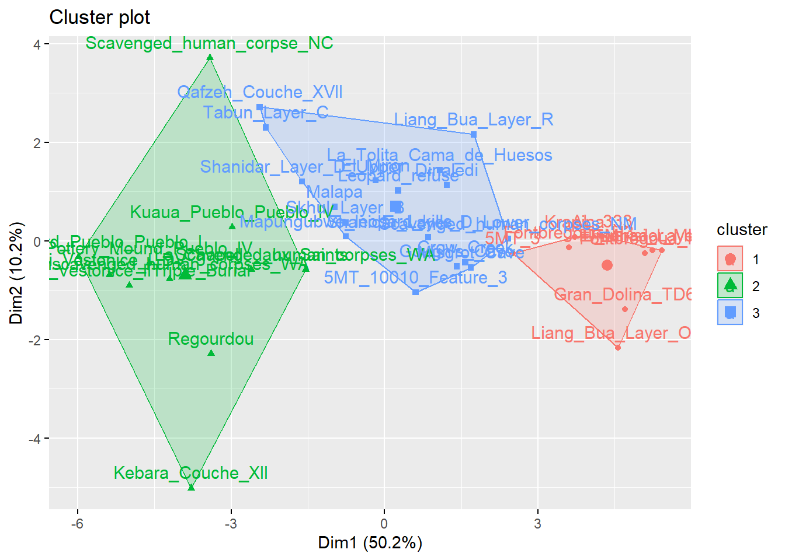
Eval
# Perform K-means clustering on the training set
set.seed(42)
kmeans_result <- kmeans(data_km, centers = 3, nstart = 25)
# Assign test set points to nearest clusters
get_nearest_cluster <- function(point, centers) {
distances <- apply(centers, 1, function(center) dist(rbind(center, point)))
return(which.min(distances))
}
# Apply the function to each row in the test set
cluster_assignments_test <- apply(sh, 1, get_nearest_cluster, centers = kmeans_result$centers)Warning in rbind(center, point): number of columns of result is not a multiple
of vector length (arg 1)Warning in dist(rbind(center, point)): NAs introduced by coercionWarning in rbind(center, point): number of columns of result is not a multiple
of vector length (arg 1)Warning in dist(rbind(center, point)): NAs introduced by coercionWarning in rbind(center, point): number of columns of result is not a multiple
of vector length (arg 1)Warning in dist(rbind(center, point)): NAs introduced by coercionsh_km = sh[cols_km]
# Combine the training and test sets for visualization
combined_df <- rbind(data_km, sh_km)
combined_clusters <- c(kmeans_result$cluster, cluster_assignments_test)
# Visualize with fviz_cluster
fviz_cluster(list(data = combined_df, cluster = combined_clusters))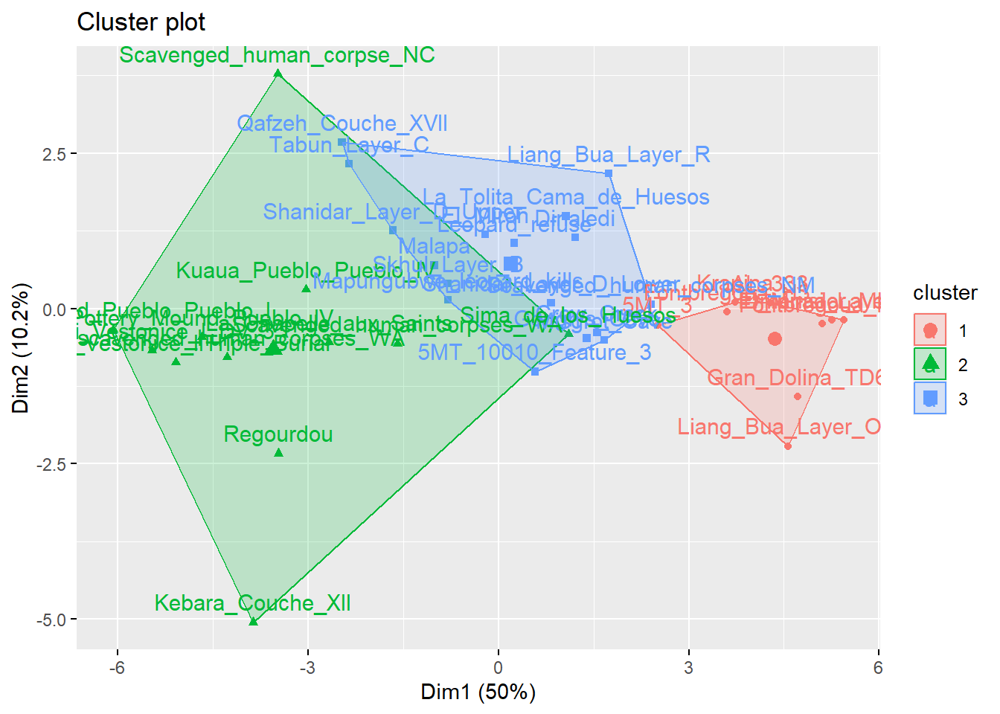